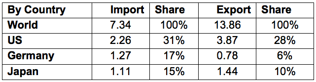

Return to top
China is now the world's second largest market for medical equipment. Based on the information from China Association for Medical Devices Industry (CAMDI), in recent years China's medical equipment market has been growing at 15 percent annually, and reached a total size of RMB 100 billion in 2010 (about US$156 million), ranking second in the world behind the United States. The domestic production volume of low to mid-range medical equipment and products ranked top in the world at 75 percent; high-end products only accounted for 25 percent, showing that the majority of medical equipment and products produced by domestic Chinese manufacturers are low-tech. Several foreign companies such as General Electric (GE), Philips, and Hitachi supply 80 percent of China's high-end medical equipment. Clinical laboratory equipment and reagent sales are growing at about 15 percent to 20 percent annually.
According to statistics from the China Chamber of Commerce for Import and Export of Medicines and Health Products (CCCMHPIE), by the end of 2010 China's import and export value of medical equipment reached $22.7 billion, an increase of 23.47 percent over 2009. For more detailed information, refer to the list below of top three countries and market share in the import and export of medical equipment to China in 2010.
Medical Device Import and Export Value in 2010 by Top 3 Countries (in billion dollars)

China's healthcare market is severely underdeveloped and offers significant potential for U.S. companies interested in expanding into the Chinese market. The Chinese Government has mandated $124 billion to develop basic healthcare infrastructure in hopes of providing basic healthcare coverage for all Chinese. China has over 20,000 hospitals, 85 percent of which are publicly-owned; the remaining 15 percent, approximately 2,000 hospitals, are private or China-foreign joint venture hospitals. Due to China's aging population, uneven location of medical resources, and chronic diseases, existing healthcare services cannot meet the huge demand of the current population. To narrow the gap between the huge demand for healthcare services and the shortage of public resources and hospitals, the government is encouraging social capital or investment into high-end or privately-owned hospitals to meet the gap of public hospitals in its 12th FYP. More privately-owned or foreign-invested hospitals are expected to be established in China. Growth of hospitals will encourage the development of the medical device market in China.
Chinese end-users consider U.S. products to be of superior quality and the most technologically advanced. China's hospitals particularly welcome medical equipment and products with high-technology content. At the same time, domestic medical device companies are consolidating, upgrading quality, and beginning to compete in medium-level technology niches.
Barriers exist with an uncertain regulatory environment and extensive delays in registration and re-registration of products, although efforts are reportedly being made to reduce the large backlog. Additionally, pricing, tender, and bar code systems also play a role of delaying a company's entry into the Chinese medical device market.
Return to top
The best selling prospects in the healthcare sector include:
In vitro diagnostic equipment and reagents: Clinical and diagnostic analysis. equipment, diagnostic reagents, medical test and basic equipment instruments.
Implantable and intervention materials and artificial organs: Interventional materials, implantable artificial organs, contact artificial organs, stent, implantable materials, and artificial organ assisting equipment.
Therapeutic products: Tri-dimensional Ultrasonic focused therapeutic system, body rotary Gamma knife, simulator, linear accelerator, laser diagnostic and surgery equipment, nuclide treatment equipment, physical and rehabilitation equipment.
Medical diagnostic and imaging equipment: Black & white and colored supersonic diagnostic unit, sleeping monitor, digital X-ray system, MRI, CT, DR, and ultrasound equipment.
Surgery and emergency appliances: Anesthesia ventilation systems and components: high frequency surgery equipment, high frequency and voltage generators.
Healthcare Information Technology related equipment and products: Medical software, computer-aided diagnostic equipment, and hospital information systems (HIS, CIS, and HLT).
Medical equipment parts and accessories.
Health services: hospitals.
Return to top
China Med 2012
The 24th International Medical Instruments & Equipment Exhibition
Dates: March 23-25, 2012
Venue: China National Convention Center, Beijing
Address: No.7 Tianchen East Road, Chaoyang District, Beijing, China
Website: http://www.chinamed.net.cn/en/Visitor.asp
China Medical Equipment Fair (67th CMEF Spring 2012)
Date: April 17-20, 2012
Venue: Shenzhen Convention & Exhibition Center
Shenzhen, China
Phone: (86 10) 8455-6603
Fax: (86 10) 8202-2922
Website: http://en.cmef.com.cn/
SINO-Dental 2012
Dates: June 9-12, 2012
Location: China National Convention Center (CNCC), Beijing
Add: No. 7 Tianchen East Road, Chaoyang District, Beijing, China
Website: www.chinamed.net.cn/en/Default.asp
MEDTEC China
Dates: September 26-27, 2012
Location: Shanghai-Intex, No. 88 Lou Shan Guan Road, Shanghai 200336, China Website: http://www.devicelink.com
Return to top
Beijing
Ms. Shuyu Sun
Senior Commercial Specialist
The Commercial Service of the U.S. Embassy in Beijing
No. 55, An Jia Lou Road, Chaoyang District
Beijing 100600, China
Tel: (86 10) 8531-3946
Fax: (86 10) 8531-4343
Email: shuyu.sun@mail.doc.gov
Shanghai
Lynn Jiao
Senior Commercial Specialist
U.S. Consulate General Shanghai
1376 Nanjing West Road, Suite 631
Shanghai 200040, China
Tel: (86 21) 6279-8750
Fax: (86 21) 6279-7639
Email: lynn.Jiao@mail.doc.gov
Guangzhou
Shuquan (Sherman) Li, Senior Commercial Specialist
U.S. Consulate General, Guangzhou
14/F, China Hotel Office Tower
Liuhua Road, Guangzhou 510015, China
Tel: (86 20) 8667-4011 ext. 625
Fax: (86 20) 8666-6409
E-mail: shuquan.li@mail.doc.gov
Chengdu
Ling Chen, Commercial Representative
Commercial Service, Chengdu
No. 4 Ling Shi Guan Lu
Chengdu, Sichuan 610041, China
Tel: (86 28) 8558-3992 ext. 6939
Fax: (86 28) 8558-9221
Email: ling.chen@mail.doc.gov